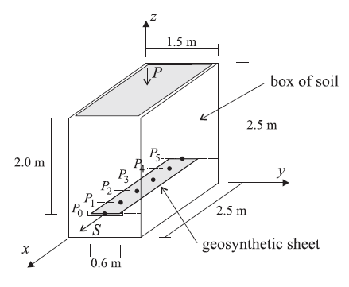
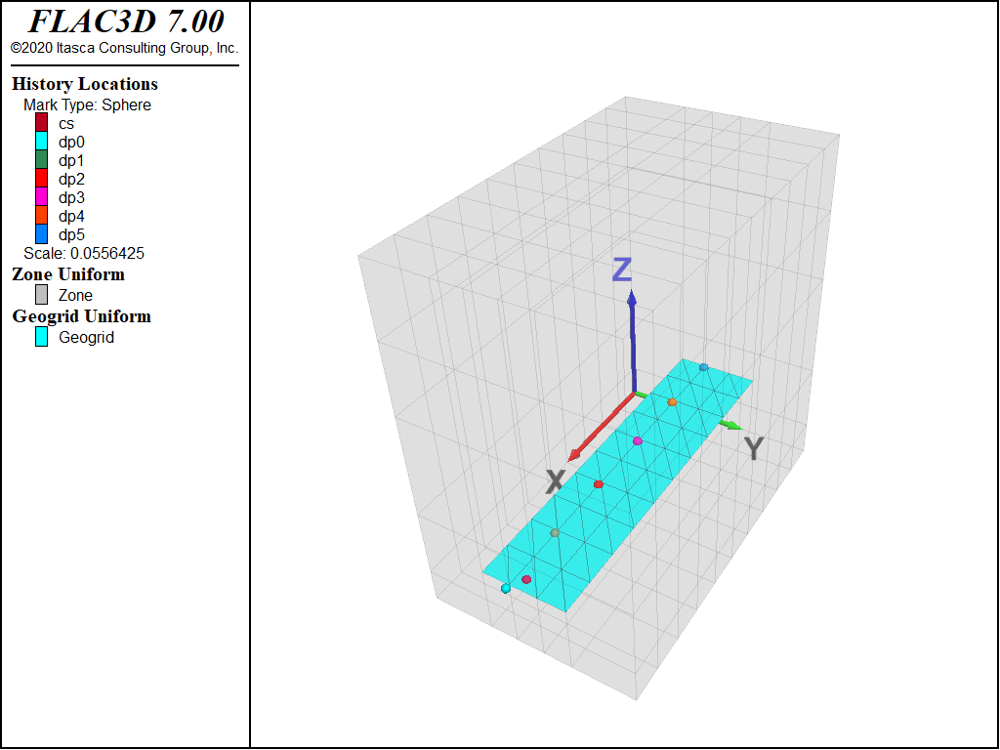
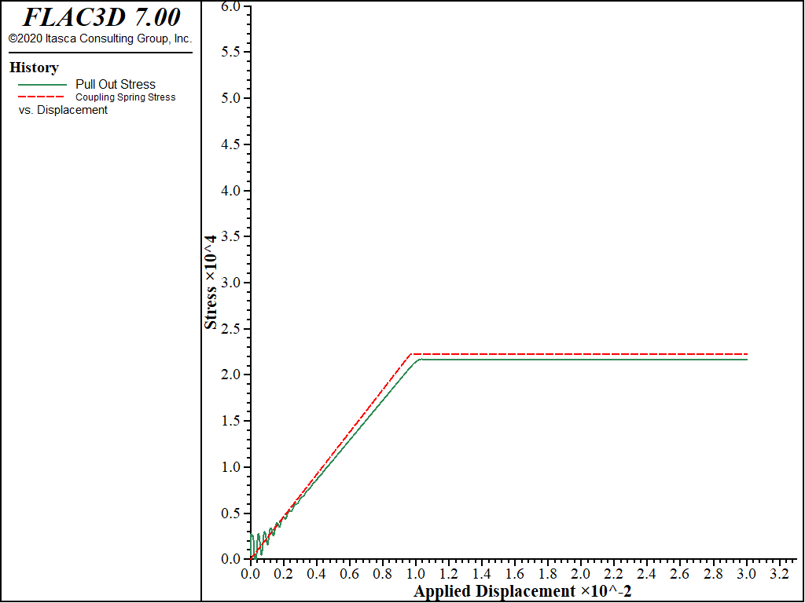
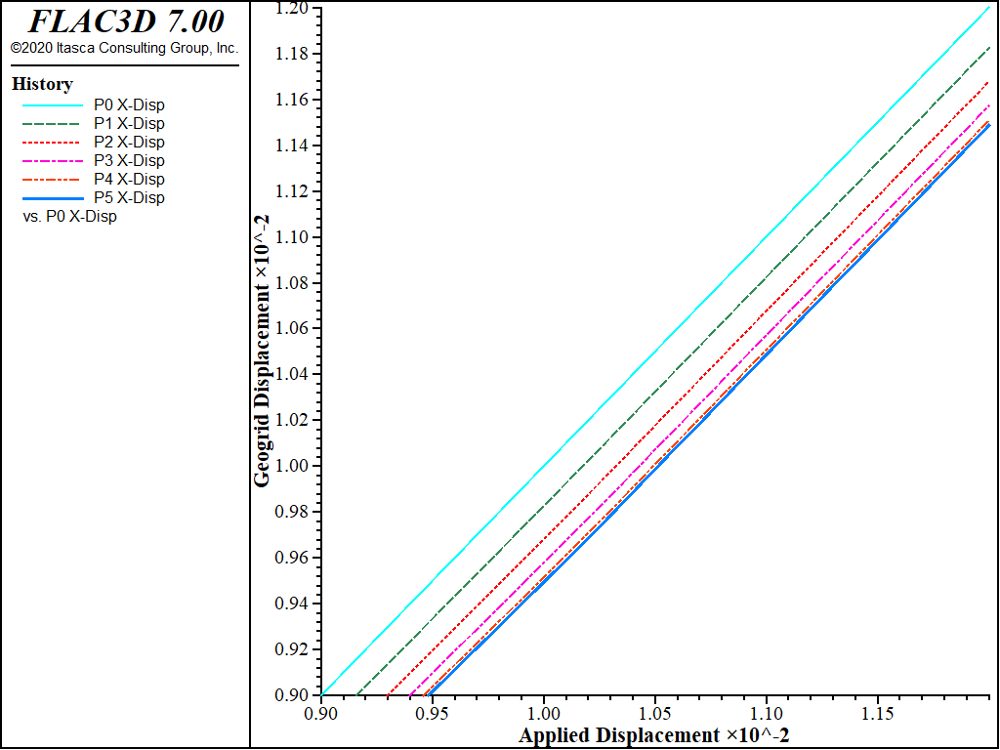
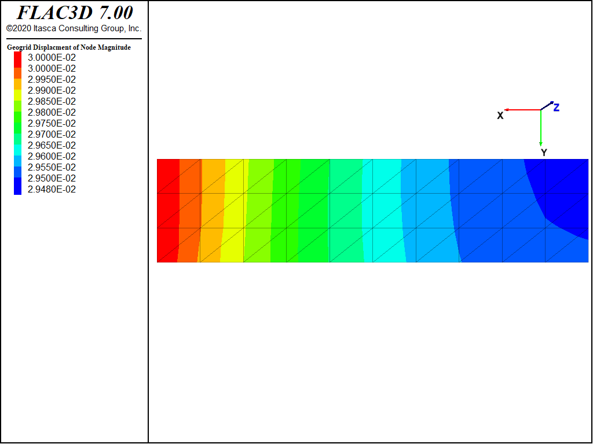
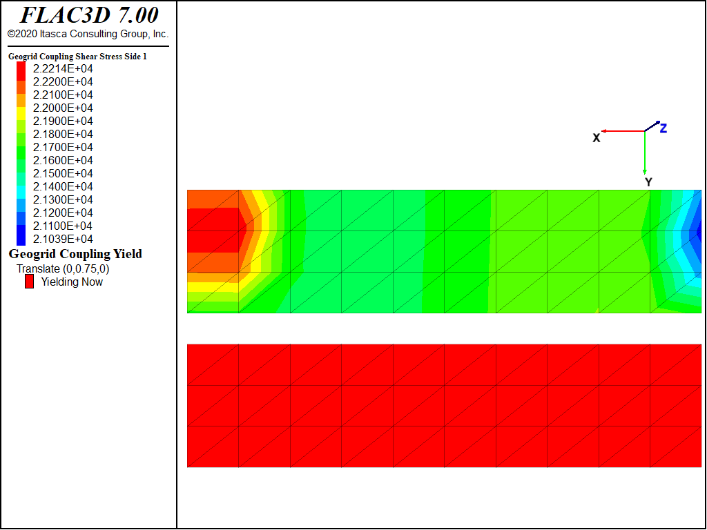
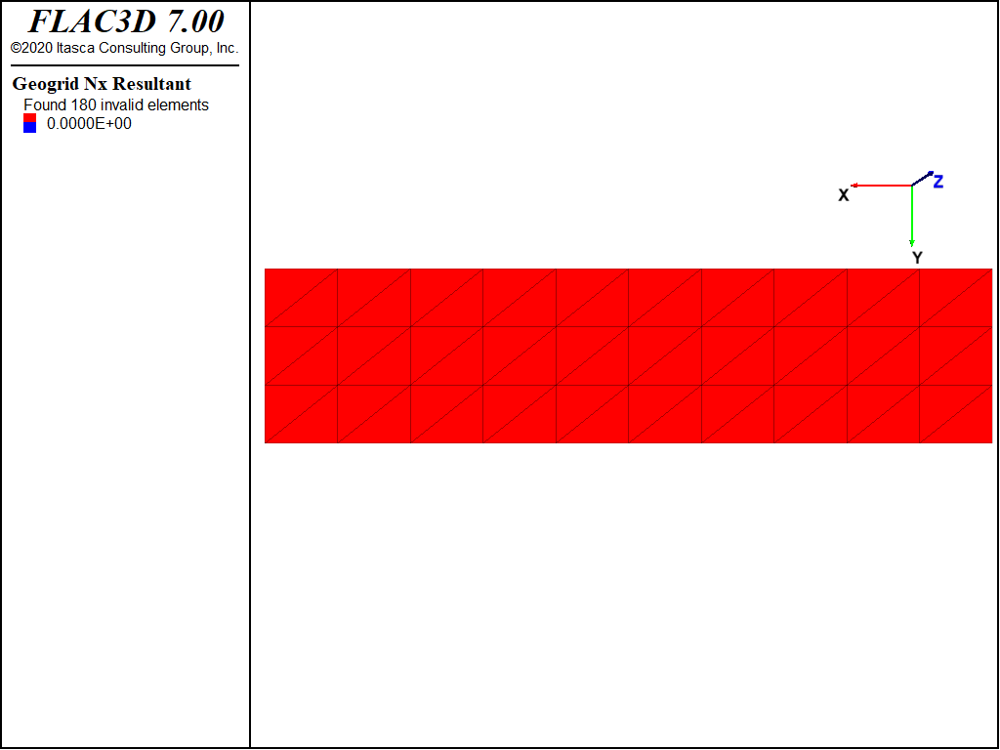
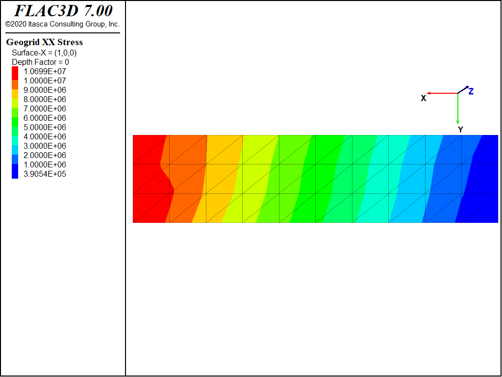
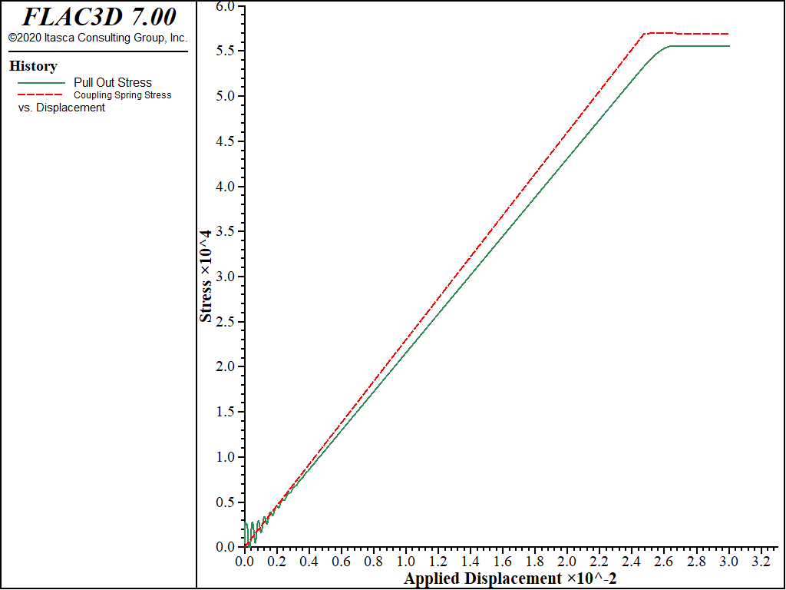

土工格栅拉拔试验
问题描述
注意
要在 FLAC3D 中查看此项目，请使用菜单命令 。选择“Structure/Geogrid/PullOutTest”，然后选择“PullOutTest.f3prj”进行加载。所使用的主数据文件（main data files）显示在本示例末尾。其余数据文件可在项目中找到。
将土工合成材料片材埋入土箱中，然后从土中拔出，如图 1（Figure 1） 所示。监测并绘制总拔出力与位移。试验在不同围压值下进行。本示例为选择土工格栅性质提供指导，并演示土工格栅-土体系统的剪切响应。它使用了 Beneito 和 Gotteland（2001）中所述的性质。

图 1：土工格栅拉拔试验的配置。
假定土体（\(E\) = 15 MPa，\(\nu\) = 0.3，\(\rho\) = 1950 kg/m3）和土工格栅（\(E\) = 26 GPa，\(\nu\) = 0.33，\(t\) = 5 mm）均保持弹性，且所有破坏均发生在土工格栅-土体界面上。界面性质（\(k\)、\(c\)、\(\phi\)）按下述方法估算。
假定已在不同围压下进行了一组拉拔试验。将 \(k\) 的值设为拉拔应力-位移曲线的斜率。在 Beneito 和 Gotteland（2001）中，该斜率随围压增大而增大。就我们的目的而言，围压为 39 kPa（相当于土工格栅上方土体的重量）时的斜率通过如下设置来匹配：
| 其中： | \(S\) | = 拉拔应力（拔出力/（埋入的土工格栅面积））；以及 |
| \(U\) | = 拉拔位移。 |
\(c\) 和 \(\phi\) 的值由最大拔出力与围压的关系图求得。该曲线的斜率等于 \(\tan\phi\)，\(y\) 轴截距等于 \(c\)。在 Beneito 和 Gotteland（2001）中，黏聚力为零，围压为 100 kPa 和 25 kPa 时的最大拉拔应力分别为 54 kPa 和 12 kPa。就我们的目的而言，这些数据通过如下设置来匹配：
FLAC3D 模型由 60 个土工格栅单元和 250 个网格单元组成，如图 2（Figure 2） 所示。网格使用 挤出器 工具针对本试验进行了定制，数据文件从 状态 窗格导出。建模顺序如下：从无应力的土体开始，固定箱体的侧面和底面，安装土工格栅，激活重力，对顶面施加恒定压力（首次运行中该压力为零），并使用 zone initialize-stresses 命令达到平衡。在此阶段，箱体侧面和底面受到土体压缩，土工格栅表面承受 39 kPa 的围压。


图 2：土工格栅拉拔试验的 FLAC3D 模型。
拉拔试验通过沿箱体前部对土工格栅节点施加恒定水平速度来完成。这些节点速度在土工格栅平面内被固定（对应于节点局部 \(xy\) 轴——见 structure node initialize 命令），然后指定全局 \(x\) 方向上的速度。试验过程中监测所施加的位移和力。所施加的力等于作用在箱体前部土工格栅节点上的总不平衡力（由 拉拔应力（pullOutStress） FISH 函数计算），而拉拔应力等于该力除以埋入的土工格栅面积。还监测了沿土工格栅中心线从前到后每 0.5 m 间隔的六个耦合弹簧中的总剪切位移，以及前部节点的耦合应力。（历史监测点的位置如图 2（Figure 2） 所示。）
在顶面未施加压力的情形下，拉拔应力与施加位移的关系如图 3（Figure 3） 所示。需要约 10 mm 的施加位移才能调动土工格栅的全部摩擦阻力。在该试验中，作用在土工格栅表面的有效围压等于 39 kPa。对于该围压值和所指定的土工格栅界面性质，最大剪应力应等于 21.8 kPa。所得值为 21.6 kPa，与理论值一致。此外，该曲线的斜率等于耦合弹簧刚度（见方程(1)）。
图 3（Figure 3） 还将前部耦合弹簧中作用的剪应力演化与拉拔剪应力进行了比较。可以发现，前部耦合弹簧在整体系统屈服之前就屈服了。这是可以预期的，因为屈服区从前部开始，然后向土块内部传播。同时还发现，耦合弹簧中的最大应力略高于整体系统的值（22.19 kPa 对 21.6 kPa）。此外，作用在前部耦合弹簧上的有效围压（列出土工格栅单元耦合命令（structure geogrid list coupling） range component-id 57）等于 40.03 kPa，略高于作用在整个土工格栅上的平均值 39 kPa。图 3（Figure 3） 说明了土工格栅节点处局部响应与整个土工格栅系统整体响应之间的差异。在整个系统中，由于箱壁的边界效应，土工格栅不同部位的有效围压不同。


图 3：\(P_0\) 处的拉拔剪应力和耦合弹簧应力与施加位移的关系（顶面未施加压力）。
在图 4（Figure 4） 中，土工格栅位移 \(U_i\) 绘制为在位置 \(P_i\)（来自图 1（Figure 1））处随施加位移 \(U_0\)（9 至 12 mm 范围）的变化。在该图中，历史 10-15 分别对应于点 \(P_0\)-\(P_5\)。随着屈服区从前部向内推进，可以观察到土工格栅逐渐被调动的现象。斜率相同表明所有点与前部以相同速率移动，而偏移量表明前部点比后部点移动得更远（另见图 5（Figure 5））。偏移量很小是因为土工格栅的刚度远大于周围土体，以致土工格栅本身在屈服前产生的应变很小。


图 4：沿土工格栅中心线的位移与施加位移的关系（顶面未施加压力）。


图 5：土工格栅位移场（\(U_0\) = 12 mm；顶面未施加压力）。
在施加位移为 30 mm 时，考察作用在土工格栅上的剪应力（见图 6（Figure 6））以及土工格栅内作用的薄膜应力内力 \(N_x\)（其中 \(x\) 方向平行于全局 \(x\) 方向）（见图 7（Figure 7））。在图 8（Figure 8） 中叠加了耦合弹簧的屈服状态。首先，请注意所有耦合弹簧均已屈服。作用在土工格栅上的剪应力已达到恒定的最大值，在土工格栅表面上介于 21.2 至 22.2 kPa 之间。该值在前部最大，在远端略低。土工格栅内作用的薄膜应力内力在前部最大（53.7 kN/m），并随着远离前部而减小。这是因为随着远离前部，更多荷载传递到土体中。薄膜应力沿土工格栅宽度方向保持不变；因此，中面处全局 \(x\) 方向的应力可通过将 \(N_x\) 的值除以土工格栅厚度估算，得到 10.7 MPa，这与图 8（Figure 8） 云图中所示一致。与前部相邻的土工格栅单元中的实际 \(xx\) 应力为 10.01 MPa。


图 6：作用在土工格栅上的剪应力（\(U_0\) = 12 mm；顶面未施加压力）。


图 7：土工格栅内作用的薄膜应力内力 \(N_x\)（\(U_0\) = 12 mm；顶面未施加压力）。


图 8：土工格栅内作用的 xx 应力（\(U_0\) = 12 mm；顶面未施加压力）。
在顶面施加 61 kPa 压力的情况下重新运行模拟。这将土工格栅的围压增大到 100 kPa，与方程(2) 中所用试验数据相对应，其预期最大拉拔应力为 54 kPa。计算值等于 55.4 kPa（见图 9（Figure 9））。


图 9：拉拔剪应力与施加位移的关系（顶面施加 61 kPa 压力）。
参考文献
Beneito, C. and Ph. Gotteland. “Three-Dimensional Numerical Modeling of Geosynthetics Mechanical Behavior,” in FLAC and Numerical Modeling in Geomechanics (Proceedings of the Second International FLAC Symposium on Numerical Modeling in Geomechanics, Lyon, France, 29-31 October 2001). D. Billaux et al., eds. Lisse: Balkema (2001).
数据文件
PullOutTest.dat
model new
model large-strain off
model title "Geogrid Pull-Out Test"
; 使用 Extruder 交互创建的网格单元，导出至状态面板
program call 'geometry' suppress
zone generate from-extruder
zone face skin ; 标记模型边界
; 指定网格单元模型和参数
zone cmodel assign elastic
zone property bulk=12.5e6 shear=5.77e6 density=1950. ; E=15 MPa, nu=0.3
; 边界条件
zone face apply velocity-normal 0 range group 'East' or 'West'
zone face apply velocity-normal 0 range group 'North' or 'South'
zone face apply velocity-normal 0 range group 'Bottom'
; 创建嵌入网格单元中的土工格栅，并指定参数
struct geogrid create by-quadrilateral (0,0.45,0.5) (2.5,0.45,0.5) ...
(2.5,1.05,0.5) (0,1.05,0.5) ...
size (10,3)
struct geogrid property isotropic=(26e9, 0.33) thickness=5e-3 ...
coupling-stiffness=2.3e6 coupling-cohesion=0.0 ...
coupling-friction=29
; 标记前部的节点
struct node group 'Front' range position-x 2.5
; 初始化全局变量并求解
model gravity 10
zone initialize-stresses ratio 0.3
history interval 1
[global groups = struct.node.group(::struct.node.list,'Default')]
[global frontNodes = struct.node.list(groups=='Front')]
fish define pullOutStress
return list.sum(-struct.node.force.unbal.global(::frontNodes,1)) / 1.5
end
struct node fix velocity-x range group 'Front' ; 固定土工格栅平面内的速度
struct node fix velocity-y range group 'Front' ; （节点局部 xy 轴）
struct node initialize velocity-x 2e-6 local range group 'Front'
struct node initialize displacement (0,0,0)
struct node initialize displacement-rotational (0,0,0) ; 重置节点位移
; 节点位移时程
struct node history name='dp0' displacement-x position (2.5,0.65,0.5)
struct node history name='dp1' displacement-x position (2.0,0.65,0.5)
struct node history name='dp2' displacement-x position (1.5,0.65,0.5)
struct node history name='dp3' displacement-x position (1.0,0.65,0.5)
struct node history name='dp4' displacement-x position (0.5,0.65,0.5)
struct node history name='dp5' displacement-x position ( 0,0.65,0.5)
fish history name='stress' pullOutStress
struct geogrid history name='cs' coupling-stress component-id 57 node 2
; 设置模型阻尼
struct mechanical damping combined-local
model save 'Initial'
;; ;;;;;;;;;;;;;;;;;;;;;;;;;;;;;;;;;;;;;;;;;;;;;;;;;;;;;;;;;;;;;;
;; 顶面不施加压力
model cycle 15000
model save 'Pressure-0k'
;; ;;;;;;;;;;;;;;;;;;;;;;;;;;;;;;;;;;;;;;;;;;;;;;;;;;;;;;;;;;;;;;
;; 顶面施加 61 kPa 压力
model restore 'Initial'
zone face apply stress-zz -61e3 range group 'Top'
zone initialize-stresses ratio 0.3 overburden -61e3
model cycle 15000
model save 'Pressure-61k'
| 这些内容对您有帮助吗？… 版权与免责声明 | FLAC3D © 2019, Itasca | 原文更新于 2020 年 10 月 8 日 |